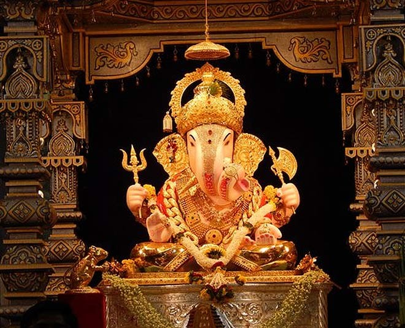

Shaniwar Wada is a historical fortification in the city of Pune, India. Built in 1732, it was the great seat of the Peshwas of the Maratha Empire until 1818. Following the rise of the Maratha Empire, the palace became the center of Indian politics in the 18th century.The fort itself was largely destroyed in 1828 by an unexplained fire, but the surviving structures are now maintained as a tourist site.
The Dagadusheth Halwai Ganapati temple is a Hindu Temple located in Pune and is dedicated to the Hindu god Ganesh. The temple is visited by over hundred thousand pilgrims every year. Devotees of the temple include celebrities and chief ministers of Maharashtra who visit during the annual ten-day Ganeshotsav festival. The Temple is 130 years old. It celebrated 125 years of its Ganapati in 2017.
